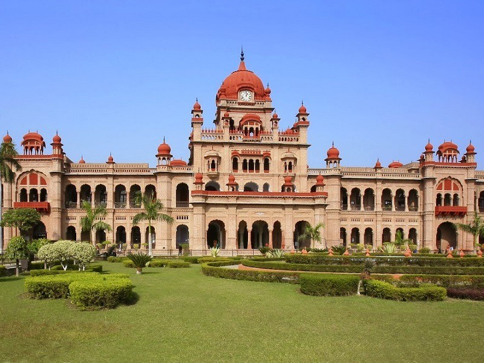

GOLDEN TEMPLE

The Harmandir Sahib, also known as Darbar Sahib "Abode of God", "Exalted Holy Court"), is a Gurdwara located in the city of Amritsar, Punjab, India. It is the preeminent pilgrimage site of Sikhism. It is usually called the Golden Temple in English, because it is plated with gold.
The Gurdwara sahib is built around a man-made pool (Sarovar) that was completed by Guru Ram Das in 1577. Guru Arjan, the fifth Guru of Sikhism, requested Sai Mian Mir – a Muslim Pir of Lahore, to lay its foundation stone in 1589. In 1604, Guru Arjan placed a copy of the Adi Granth in Harmandir Sahib, calling the site Ath Sath Tirath (lit. "shrine of 68 pilgrimages.The Gurdwara was repeatedly rebuilt by the Sikhs after it became a target of persecution and was destroyed several times by the Muslim armies from Afghanistan and the Mughal Empire.
The Gurdwara is spiritually the most significant shrine in the Sikh Religion. In the early 1980s, the temple became a center of conflict between the Indian government led by Indira Gandhi, some Sikh groups, and a militant movement led by Jarnail Singh Bhindranwale seeking to create a new nation named Khalistan. In 1984, Gandhi sent in the Indian Army as part of Operation Blue Star, leading to the deaths of over 1,000 militants, soldiers, and civilians, as well as causing much damage to the Gurdwara and the destruction of Akal Takht. Ranjit Singh founded the nucleus of the Sikh Empire at the age of 21 with help of Sukerchakia Misl forces he inherited and those of his mother-in-law Rani Sada Kaur. In 1802, at age 22, he took Amritsar from the Bhangi Sikh misl, paid homage at the Golden Temple and announced that he would renovate and rebuild it with marble and gold. The Temple was renovated in marble and copper in 1809, and in 1830 Ranjit Singh donated gold to overlay the sanctum with gold foil. The management and operation of Darbar Sahib – a term that refers to the entire Golden Temple complex of buildings, was taken over by Ranjit Singh. He appointed Sardar Desa Singh Majithia (1768-1832) to manage it and made land grants whose collected revenue was assigned to pay for the Temple's maintenance and operation. Ranjit Singh also made the position of Temple officials hereditary.
JALLIANWALA BAGH
Jallianwala Bagh (Indian Punjabi: ਜਲਿਆਂਵਾਲਾ ਬਾਗ਼, Pakistani Punjabi: جالیاں والاباغ, Hindi: जलियांवाला बाग़ ) is a public garden in Amritsar, and houses a memorial of national importance, established in 1951 by the Government of India, to commemorate the massacre of peaceful celebrants including unarmed women and children by British occupying forces, on the occasion of the Punjabi New Year (Baisakhi) on 13 April 1919 in the Jallianwala Bagh Massacre. Colonial British Raj sources identified 379 fatalities and estimated about 1100 wounded.[2] Civil Surgeon Dr. Smith indicated that there were 1,526 casualties.[3] The true figures of fatalities are unknown, but are very likely to be many times higher than the official figure of 379.
The 6.5-acre (26,000 m2) garden site of the massacre is located in the vicinity of Golden Temple complex, the holiest shrine of Sikhism. The memorial is managed by the Jallianwala Bagh National Memorial Trust, which was established as per the "Jallianwala Bagh National Memorial Act". Act No. 25 of 1 May 1951. Retrieved 10 August 2016.On 13 April, Brigadier General R.E.H. Dyer arrived from Jalandhar Cantonment, and virtually occupied the town as civil administration under Miles Irving, the Deputy Commissioner, had come to standstill. On Sunday, 13 April 1919, Dyer was convinced of a major insurrection and he banned all meetings; however, this notice was not widely disseminated. That was the day of Baisakhi, the main Sikh festival, and many villagers had gathered in the Bagh. On hearing that a meeting had assembled at Jallianwala Bagh, Dyer went with ninety Sikh, Gurkha, Baluchi, Rajput troops from 2-9th Gurkhas, the 54th Sikhs and the 59th Sind Rifles to a raised bank and ordered them to shoot at the crowd. Dyer continued the firing for about ten minutes, until the ammunition supply was almost exhausted; Dyer stated that 1,650 rounds had been fired, a number which seems to have been derived by counting empty cartridge cases picked up by the troops. Official British Indian sources gave a figure of 379 identified dead, with approximately 1,200 wounded. The casualty number estimated by the Indian National Congress was more than 1,500, with approximately 1,000 dead.The place derives its name from that of the owner of this piece of land during the rule of the Sikh Empire. It was then the property of the family of Himmat Singh, who originally came from the village of Jalla, now in Fatehgarh Sahib district of the Punjab. The family were collectively known as Jallhevale or simply Jallhe or Jalle, although their principal seat later became Alavarpur in Jalandhar district. The site, once a garden or garden house, was in 1919 an uneven and unoccupied space, an irregular quadrangle, indifferently walled, approximately 225 x 180 meters which was used more as a dumping ground than anything else.
WAGAH BORDER

Attari-Wagah (Urdu: واہگہ, Shahmukhi Punjabi: واہگہ) or Wahga is a village and union council (UC 181) located in the Wahga Zone of Lahore, Punjab, Pakistan.] The town is famous for the Wagah border ceremony and also serves as a goods transit terminal and a railway station between Pakistan and India. Wagah is situated 600 metres (2,000 ft) west of the border and lies on the historic Grand Trunk Road between Lahore and Amritsar in India. The border is located 24 kilometres (15 mi) from Lahore and 32 kilometres (20 mi) from Amritsar. It is also 3 kilometres (1.9 mi) from the bordering village of Attari.
The border crossing draws its name from Wahga village, near which the Radcliffe Line, the boundary demarcation linedividing India and Pakistan upon the Partition of British India, was drawn.[3] At the time of independence in 1947, migrants from India entered Pakistan through this border crossing. The Wagah railway station is 400 metres (1,300 ft) to the south and 100 metres (330 ft) from the border. The Wagah-Attari border ceremony happens at the border gate, two hours before sunset each day. The flag ceremony is conducted by the Pakistan Rangers and Indian Border Security Force (BSF), similar to the retreat ceremonies at Ganda Singh Wala/Hussainiwala border crossing and Mahavir/Sadqi International Parade Ground border crossing. The ceremony lasts for 45 minutes. However, the Wagah attari border entrance is open from 10:00 AM to 4:00 PM, so its best to visit the place atleast 1 hour before parade as everyone do not get to attend the ceremony easily.
KHALSA COLLAGE

Khalsa College (Punjabi: ਖਾਲਸਾ ਕਾਲਜ khālsā kālaj) is a historic educational institution in the northern Indian city of Amritsar in the state of Punjab, India. Founded in 1892, the sprawling 300-acre (1.2 km2) campus is located about eight kilometers from the city-center on the Amritsar-Lahore highway (part of the Grand Trunk Road), adjoining Guru Nanak Dev University campus, to which Khalsa College is academically affiliated.
Khalsa College was built as an educational institute during the British Raj in India when Sikh scholars thought about providing higher education to Sikhs and Punjabis within Punjab. Amritsar was chosen for its establishment and Singh Sabha Movement and Chief Khalsa Diwan approached the then Sikh Maharajas and Sikh people of Punjab to raise funds and donate land to build this unique institute. People of Amritsar, Lahore and other cities of Punjab including rich Sikh families and Maharajas donated land and raised funds to build Khalsa College, Amritsar. Its architectural design was created by Ram Singh, a famous architect who also designed one of the Places in England. Its building was completed in 1911–12. Its architectural features are mix of British, Mughal and Sikh architect. Khalsa college's contribution towards the freedom history of India is significant as it has generated many famous freedom fighters, political leaders, armed forces generals, scientists, famous players-Olympians, actors, writers, journalists and scholars. More information about Khalsa college can be found in the book "History of Khalsa College Amritsar," written by Dr. Ganda Singh, former head of the dept. of Sikh History, Khalsa College Amritsar. In modern times, the only research work on Khalsa College's history, "The Temple of Study-Khalsa College Amritsar," was performed by Jaspreet Singh Rajpoot, an alumnus of Khalsa, in the year 2002 with the collaboration of Khalsa College governing council and Dr. Mohinder Singh Dhillon (the then Principal of KCA), reveals the facts of Khalsa college which are still unknown to most of the people around the world.
THE MALL OF AMRITSAR
The Mall Of Amritsar is the city’s definitive social and shopping destination. Mall Of Amritsar packs in a complete package of entertainment and shopping experience for its patrons. Spread across 5,35,241 square feet of retail space, the Mall Of The design is ergonomically defined by high quality standards and urbane architecture. Home to over 250 regional, national and international brands, the Mall Of Amritsar brings a novel shopping experience for all its patrons. A crowd favourite, the Mall of Amritsar is undergoing a surreal metamorphosis that not only includes churning of brands but also changing circulation for the patrons in the mall. The food court is being relocated and we now have several brands that will not only be First in city but also first in Punjab. Get ready to witness state of the art infrastructure, a larger atrium, a world class brand new food court and first in city international brands only at Punjab’s only cultural, social and shopping destination – Mall Of Amritsar.
Amritsar is home to one of the coolest malls in town and that is the 'Mall Of Amritsar'. With over 250 national, regional and international brands, all under one roof, people cannot fall short of choices. Complimenting leading national chains like like Marks and Spencer, Shopper's Stop & Reliance Trends your shopping experience at the Mall of Amritsar is all set to be rebooted as we add a plethora of World Class Brands like H&M, Unlimited, Burger King, Reliance Digital and many more.
HAVELI
Haveli stands as a tribute to the glorious past & lifestyle of Punjab. The rich culture of Punjab is well depicted in the ambience & hospitality of Haveli. Haveli is not just a restaurant; it is a holistic experience of Punjab which is derived from the various food stalls, cultural stores and the impeccable decor. There are elements like a life-size truck, a dummy well, colourful bangles, parandis etc. that add up to the ethnicity of the place. Guests can shop for souvenirs at the stores selling traditional artifacts. Punjabi food is world-renown and we have taken the efforts to maintain that expectation by offering authentic flavours of Punjab. As the name suggests, Haveli offers every guest a grand meal served in a palatial way. The staff dressed in traditional Punjabi attire ensure that every guest has a pleasant experience to take back home. Haveli as a place was conceptualized by Mr. Satish Jain. During his childhood he saw the vast and rich culture of Punjab where guests at home were treated as GOD. Creating Haveli is his effort to keep the Punjabi tradition alive. He did a lot of research which has helped him to look into the finer details of everything from exquisite decor to delicious food. Haveli has frozen time to that golden era for generations to come & experience the splendor of Punjab in its true sense.
DURGIANA MANDIR
The Durgiana Temple (ਦੁਰਗਿਆਨਾ ਮੰਦਿਰ), also known as Lakshmi Narayan Temple, Durga Tirath and Sitla Mandir, is a premier temple situated in the city of Amritsar, Punjab, India.[1] Though a Hindu temple, its architecture is similar to the Golden Temple. This temple derives its name from the Goddess Durga, the chief Goddess deified and worshipped here. Idols of Goddess Laksmi (goddess of wealth) and Vishnu (the protector of the world) are also deified here and worshipped. The temple is situated near the Lohgarh gate, in Amritsar, in the Indian state of Punjab . It is very close to the Amritsar Railway station, and is about 1.5 kilometres (0.93 mi) from the bus station. Amritsar is well connected by road, rail and air services with the rest of the country. Flights to Delhi operate from the Raja Sansi Airport, which is 12 kilometres (7.5 mi) to the north west of Amritsar. There are direct rail links to Delhi, Calcutta and Mumbai. The National Highway No. 1 (India)connects Delhi to Amritsar.
It was built in 1921 by Guru Harsai Mal Kapoor in the architectural style of the Sikh Golden Temple. The newly built temple was inaugurated by Pandit Madan Mohan Malaviya. Even though Amritsar is not declared a Holy city, restrictions are in force prohibiting sale of tobacco, liquor and meat within a radius of 200 metres (660 ft) around this temple and the Golden Temple. The temple is built in the middle of a sacred lake, which measures 160 metres (520 ft) x 130 metres (430 ft). Its dome and canopies are similar to that of the Golden temple of Sikh religion, also located in Amritsar.